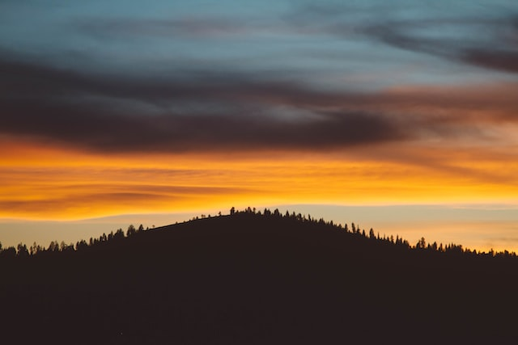

Jukolan talo, eteläisessä Hämeessä, seisoo erään mäen pohjoisella rinteellä, liki Toukolan kylää. Sen läheisin ympäristö on kivinen tanner, mutta alempana alkaa pellot, joissa, ennenkuin talo oli häviöön mennyt, aaltoili teräinen vilja. Peltojen alla on niittu, apilaäyräinen, halkileikkaama monipolvisen ojan; ja runsaasti antoi se heiniä, ennenkuin joutui laitumeksi kylän karjalle. Muutoin on talolla avaria metsiä, soita ja erämaita, jotka, tämän tilustan ensimmäisen perustajan oivallisen toiminnan kautta, olivat langenneet sille osaksi jo ison jaon käydessä entisinä aikoina. Silloinpa Jukolan isäntä, pitäen enemmän huolta jälkeentulevainsa edusta kuin omasta parhaastansa, otti vastaan osaksensa kulon polttaman metsän ja sai sillä keinolla seitsemän vertaa enemmän kuin toiset naapurinsa. Mutta kaikki kulovalkean jäljet olivat jo kadonneet hänen piiristänsä ja tuuhea metsä kasvanut sijaan. - Ja tämä on niiden seitsemän veljen koto, joiden elämänvaiheita tässä nyt käyn kertoilemaan.
Veljesten nimet vanhimmasta nuorimpaan ovat: Juhani, Tuomas, Aapo, Simeoni, Timo, Lauri ja Eero. Ovat heistä Tuomas ja Aapo kaksoispari ja samoin Timo ja Lauri. Juhanin, vanhimman veljen, ikä on kaksikymmentä ja viisi vuotta, mutta Eero, nuorin heistä, on tuskin nähnyt kahdeksantoista auringon kierrosta. Ruumiin vartalo heillä on tukeva ja harteva, pituus kohtalainen, paitsi Eeron, joka vielä on kovin lyhyt. Pisin heistä kaikista on Aapo, ehkä ei suinkaan hartevin. Tämä jälkimmäinen etu ja kunnia on Tuomaan, joka oikein on kuuluisa hartioittensa levyyden tähden. Omituisuus, joka heitä kaikkia yhteisesti merkitsee, on heidän ruskea ihonsa ja kankea, hampunkarvainen tukkansa, jonka karheus etenkin Juhanilla on silmään pistävä.
Veljesten nimet vanhimmasta nuorimpaan ovat:
Juhani,
Tuomas, Aapo, Simeoni, Timo, Lauri ja Eero.
Heidän isäänsä, joka oli ankaran innokas metsämies, kohtasi hänen parhaassa iässään äkisti surma, kun hän tappeli äkeän karhun kanssa. Molemmat silloin, niin metsän kontio kuin mies, löyttiin kuolleina, toinen toisensa rinnalla maaten verisellä tanterella. Pahoin oli mies haavoitettu, mutta pedonkin sekä kurkku että kylki nähtiin puukon viiltämänä ja hänen rintansa kiväärin tuiman luodin lävistämänä. Niin lopetti päivänsä roteva mies, joka oli kaatanut enemmän kuin viisikymmentä karhua. Mutta näiden metsäretkiensä kautta löi hän laimin työn ja toimen talossansa, joka vähitellen, ilman esimiehen johtoa, joutui rappiolle. Eivät kyenneet hänen poikansakaan kyntöön ja kylvöön; sillä olivatpa he perineet isältänsä saman voimallisen innon metsäotusten pyyntöön. He rakentelivat satimia, loukkuja, ansaita ja teerentarhoja surmaksi linnuille ja jäniksille. Niin viettivät he poikuutensa ajat, kunnes rupesivat käsittelemään tuliluikkua ja rohkenivat lähestyä otsoa korvessa.
Äiti kyllä koetti sekä nuhteilla että kurilla saattaa heitä työhön ja ahkeruuteen, mutta heidän uppiniskaisuutensa oli jäykkä vastus kaikille hänen yrityksillensä. Oli hän muutoin kelpo vaimo; tunnettu oli hänen suora ja vilpitön ehkä hieman jyrkkä mielensä. Kelpo mies oli myös hänen veljensä, poikien oiva eno, joka nuoruudessaan oli uljaana merimiehenä, purjehtinut kaukaiset meret, nähnyt monta kansaa ja kaupunkia; mutta näkönsäpä kadotti hän viimein, käyden umpisokeaksi, ja vietti ikänsä pimeät päivät Jukolan talossa. Hän silloin usein, veistellen tunteensa viittauksen mukaan kauhoja, lusikoita, kirvesvarsia, kurikkoja ja muita huoneessa tarpeellisia kaluja, kertoili sisarensa pojille tarinoita ja merkillisiä asioita sekä omasta maasta että vieraista valtakunnista, kertoili myös ihmeitä ja tapauksia raamatusta. Näitä hänen jutelmiansa kuultelivat pojat kaikella hartaudella ja painoivat lujasti muistoonsa. Mutta yhtä mieluisasti eivät he kuullelleetkaan äitinsä käskyjä ja nuhteita, vaan olivatpa kovakorvaisia vallan, huolimatta monestakaan pieksiäislöylystä. Useinpa kyllä, huomatessaan selkäsaunan lähestyvän, vilkasi veliparvi karkutielle, saattaen tämän kautta sekä äitillensä että muille murhetta ja kiusaa, ja sillä omaa asiaansa pahentaen.